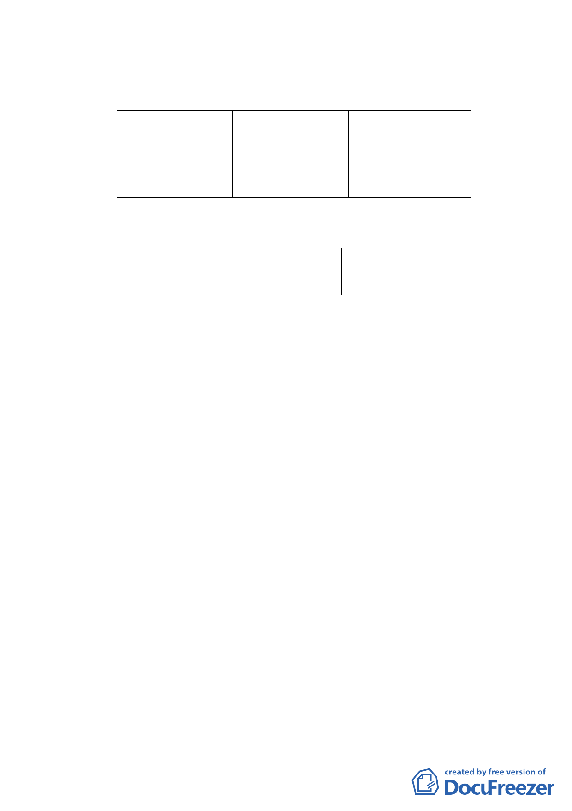

四、 變更細部計畫內容：
（一）變更土地使用分區
位置
原計畫 新計畫
信義區松仁 第三種 第三種住
路及松仁路 住宅區 宅區(特)
315巷口東
北側
面積（㎡）
變更理由
5,491 配合「修訂臺北市老舊
中低層建築社區辦理都
市更新擴大協助專案計
畫」，變更原計畫內容。
（二）土地使用分區管制
1.使用強度
使用分區
第三種住宅區（特）
原計畫
建蔽率45%
容積率225%
新計畫
建蔽率45%
容積率225%
2.使用管制
本計畫之使用比照臺北市土地使用分區管制自治條
例第三種住宅區之使用組別。
3. 本 計 畫 不 適 用 本 府 98 年 11 月 10 日 府 都 規 字 第
09837562500號公告實施「修訂臺北市信義區松仁路及
松仁路315 巷口東北側第3種住宅區土地使用管制規
定計畫案」內「徵求參與『促進都市再生2010年臺北
好好看』開發計畫案」廣場式開放空間之容積獎勵。
4.本計畫區得適用100年9月20日公告之「修訂臺北市老舊
中低層建築社區辦理都市更新擴大協助專案計畫」之
容積獎勵。本計畫區總容積上限不得超過建築基地2倍
法定容積。
5.本計畫區獎勵容積核給額度，依本市都市設計及土地使
用開發許可審議委員會及都市更新及爭議處理審議會
審議結果辦理。
五、 全案係市府100年3月23日府都規字第10130101500號公告公
開展覽並函送到會。
- 14 -